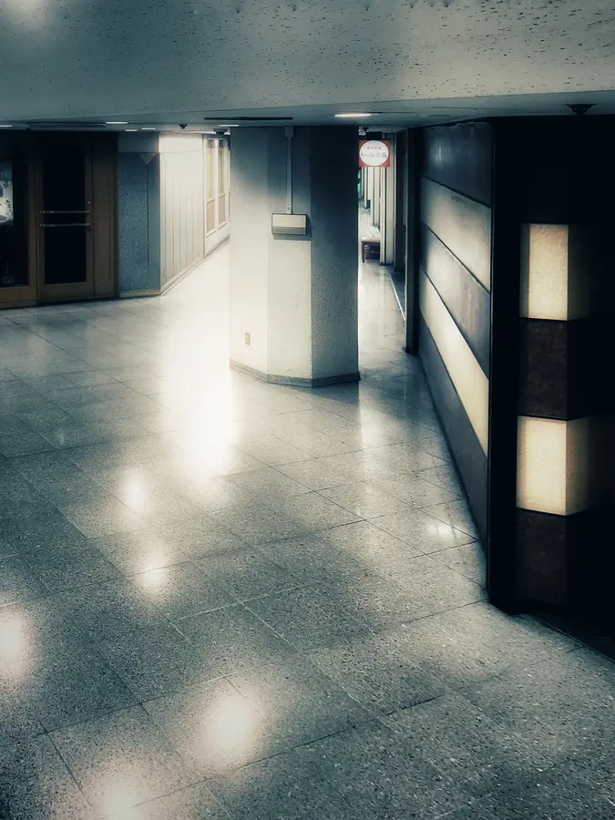

<!doctype html><meta charset="utf-8"><title>CAM08 cat anomaly blink</title>
<style>html,body{margin:0;background:#090b0d;color:#ddd;font:14px system-ui}main{height:100vh;display:flex;flex-direction:column;align-items:center;justify-content:center;gap:10px}img{height:calc(100vh - 44px);max-width:96vw;object-fit:contain}small{opacity:.75}</style>
<main><small>CAM08 baseline ↔ cat composite, 500 ms</small></main>
<script>const feed=document.querySelector('#feed'), pair=['../../public/images/cam8.webp','composite.png'];let i=0;setInterval(()=>{i^=1;feed.src=pair[i]},500);</script>
